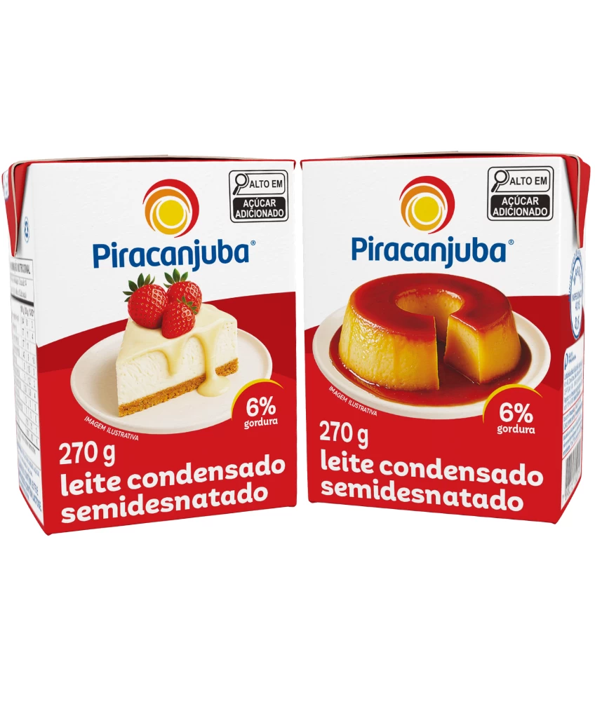
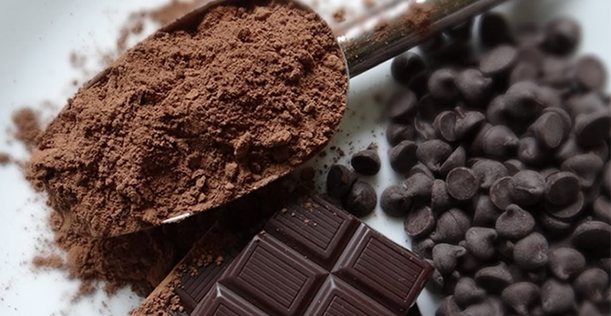
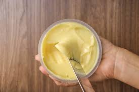
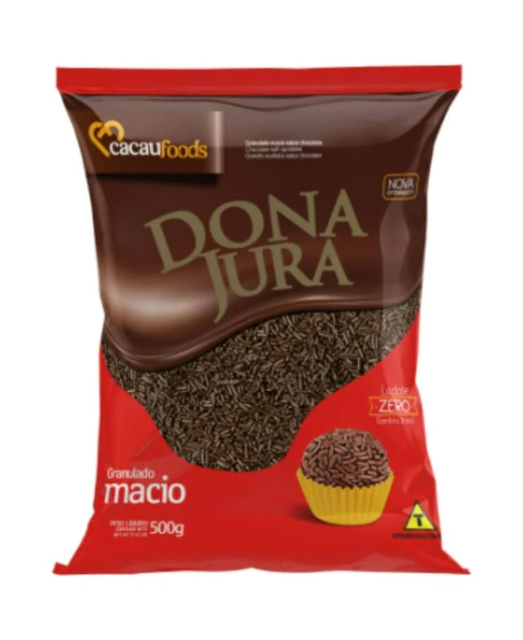

<!DOCTYPE html>
<html>
<head>
    <title>Receita de Brigadeiro</title>
</head>
<body>

</body>
</html>
<h1 id="topo">Receita de Brigadeiro</h1>


<h2>Menu</h2>

<ul>
    <li><a href="#ingredientes">Ingredientes</a></li>
    <li><a href="#preparo">Modo de Preparo</a></li>
   
<h2 id="ingredientes">Ingredientes</h2>

<ul>

    <li>
        1 lata de leite condensado
        <br>
        <a href="https://www.amazon.com.br/s?k=leite+condensado">leite condesado</a>
            <br>


    </li>

    </li>
    4 colheres (sopa) de chocolate em po
     <br>
    <a href="https://www.amazon.com.br/s?k=chocolate+em+po"> chocolate em po</a>
            
            <br>
          
    </li>

    <li>
        1 colher de (sopa) de manteiga
        <br>
        <a href="https://www.amazon.com.br/s?k=manteiga">manteiga</a>
            
        <br>
        
    </li>

    <li>
        1 pacote de granulado
        <br>
        <a href="https://www.amazon.com.br/s?k=granulado">granulado</a>
        <br>
            
        
    </li>
</ul>
<h2 id="preparo">Modo de Preparo</h2>

<ol>
    <li>Misture todos os ingredientes.</li>
    <li>Leve ao fogo baixo.</li>
    <li>Mexa até desgrudar da panela.</li>
    <li>Espere esfriar.</li>
    <li>Faça bolinhas e passe no granulado.</li>
</ol>
<a href="#topo">voltar ao inicio</a>
